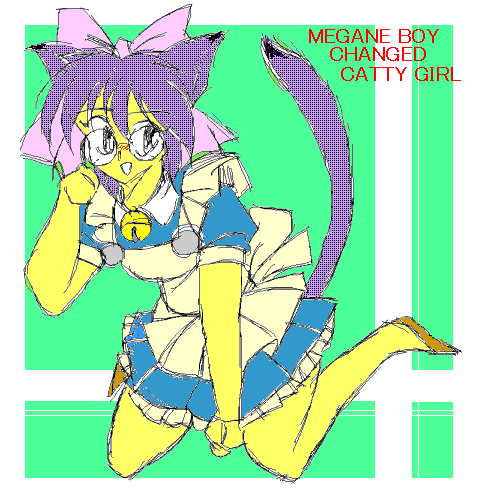
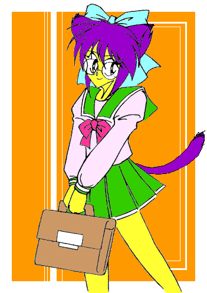

|
文庫60万ヒット記念にいただいたイラストです！ あ、タイトルはこちらで勝手に（且ついい加減に）付けました。(^^; |

|
ちゃんと、学校にも通ってるんですよ！ |
| DEDICATED STORIES | CONTRIBUTER | RECOMMEND |
| 縁結び屋、出雲大社のファイル＃１ | ゴールドアームさん | 「魔剣物語」のゴールドアームさん、久しぶりのストーリーはニャンパギータのストーリーでした。この設定は面白い！ 上手いなぁ。内容のほうは御栗崎レオナ誕生秘話になってます。「〜にゃ」言葉がカワイイ〜ん！ 「おまけ」に出てくる某人物は八重洲の作品からの特別出演です（笑）。 |
| 彼が為にある、我が忠義 | 角さん | お馴染み角さんオヤジさんコンビによる、ストーリー＋漫画形式の物語です。萌え系というよりは、燃え系の作品でしょうか。「REIKO」と同じ世界観の物語みたいですね！ |
| ニャンパギータ | 真城悠さん (Homepage) |
不思議な店「ニャンパギータ」に足を踏み入れてしまった私立探偵の運命は…… |